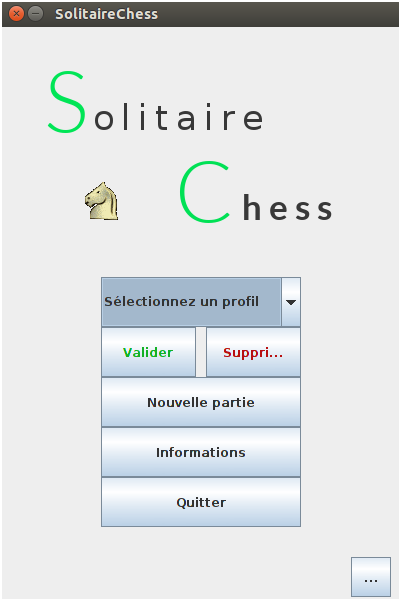
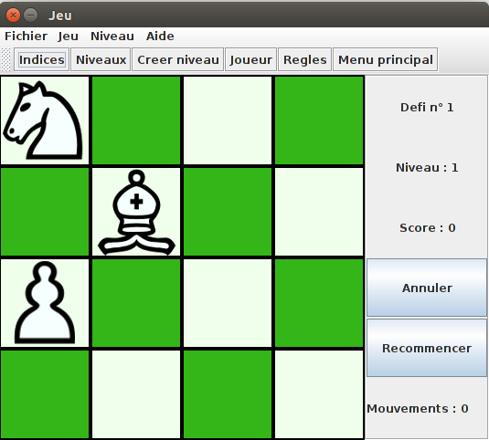
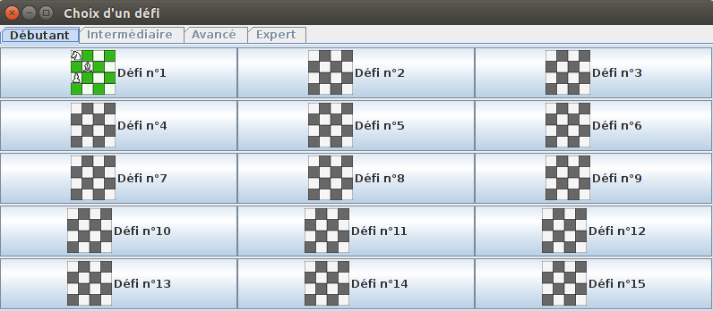
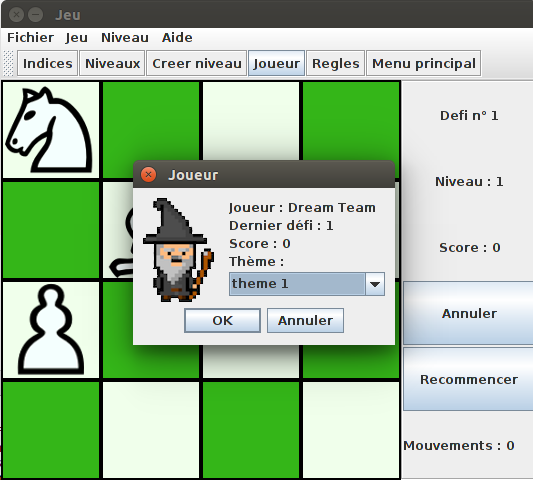

La page d'accueil
La page d'accueil s'organise de la façon suivante : - Une boîte de sélection "Sélectionnez un profil" pour choisir une partie déjà en cours. On peut la continuer ou la supprimer avec les bouton correspondants.
- Un bouton "Nouvelle partie" pour commencer une partie. Une boîte de dialogue nous demande notre pseudo.
- Un bouton "Informations" qui donne des informations sur le joueur sélectionné dans la boîte de sélection.
- Un bouton "Quitter" qui quitte le jeu.
- Un bouton "Aide" qui amène à cette aide de jeu.
La fenêtre de jeu
Nous voici maintenant dans la fenêtre de jeu. - La barre de menu en haut contient des menus récapitulant la plupart des fonctionnalités de cette fenêtre ainsi que leurs raccourcis clavier.
- La barre d'action, située juste en dessous, sera détaillée plus tard.
- Le plateau de jeu est le damier en bas à droite. C'est ici que le nous déplaçons les pièces. Le système de déplacement est en Drag&Drop ou en clique. Les cases ou peut se déplacer la pièces sont colorées. Le défi suivant en automatiquement généré une fois que le joueur à réussi le défi. S'il ne peut plus bouger, un message lui annonce et e défi recommence au début. La partie du joueur est automatiquement enregistrée quand il réussi un défi mais il peut également le faire manuellement avec la barre de menu ou le raccourci clavier Ctrl-S.
- La section à droite permet des informations sur le défi en cours, le nombre de mouvements qu'il a fait depuis le débutde sa partie ainsi que deux boutons importants : "Annuler" qui annule le coup du joueur et "Recommencer" qui réinitialise le niveau.
La barre d'actions
Voici la desciption de toutes les actions de la barre d'action :
Les indices
Les indices réinitialisent le niveau et montrent le premier mouvement. Si le joueur redemande un indice, ils montreront le deuxième mouvement etc. Chaque indice augmente de un le compteur de mouvements du joueur.
Les défis
Le joueur peut décider de recommencer les défis qu'il a débloqués ou d'aller au niveau supérieur s'il a réussi 50% des défis du niveau actuel. Pour cela, il faut cliquer sur le bouton "Niveaux" ou le faire le raccourci clavier Ctrl-O. Il peut accéder aux niveaux débloqués avec les onglets et aux défis en cliquant sur les boutons qui n'ont pas un damier grisé.
Création de niveaux
Le joueur peut créer ses propres niveaux. Cela l'amène sur une nouvelle fenêtre où il peut déplacer des pièces sur un damier. Une fois le niveau fini, il peut le valider avec le bouton "Valider" ou abandonner avec le bouton "Abandonner", ce qui, dans les deux cas, reviendra à la fenêtre de jeu.
Informations sur le joueur
Cette action affiche une petite fenêtre qui affiche le nom du joueur, le dernier défi qu'il a réussi, son nombre de mouvements et il peut également changer le thème du damier.
Règles
Pour accéder à cette aide, le joueur doit cliquer sur le bouton "Règles", ce qui amènera à la page d'accueil.
Menu principal
Le joueur peut retourner au menu principal à tout moment en cliquant sur le bouton "Menu Principal".